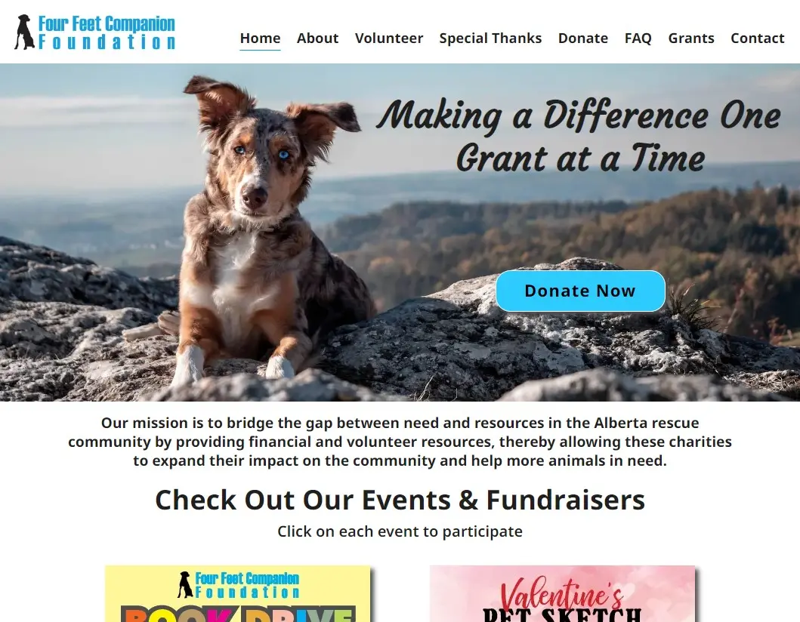

Email: stpierre.tiffany@gmail.com
Email: stpierre.tiffany@gmail.com
HTML, CSS & Javascript
My name is Tiffany St Pierre and I am a front end web developer based in Calgary, Alberta. I'm excited to share the details of this project with you and I hope you will visit the website after reading about it.
Four Feet Companion Foundation was looking for a volunteer web developer to maintain and update their website as needed. After looking at their existing website, I offered to design and build them a new website, along with providing ongoing updates, maintenance and support. They very eagerly took me up on my offer. Using Figma for the design, I was able to create a prototype based on their requirements and preferences, and work with them to fine tune it to their liking. I made sure to provide them a new design file with each revision and made sure they were 100% happy before beginning to build the website.
I built the website from scratch using HTML, CSS and Javascript, making sure to closely follow the approved design. This was the first built from scratch website that I launched and I learned a lot while creating it. I used a lot of flexbox and learned how to create modals and a collapsible FAQ section for the first time.
When the website was about 95% complete, I launched it to a temporary Netlify url so Four Feet Companion Foundation would have an opportunity to try it out in a live environment and provide additional feedback to be incorporated into the final product. I took that opportunity to run the Google Lighthouse analytics in the browser and fix potential performance and accessibility issues. After everything was completed and the website was ready to go live, I replaced the previous website files in their GoDaddy hosting account with the new ones and we were in business! The website was completed ahead of schedule and the end product fit perfectly with the organization's goals and mission.
I continue to volunteer and provide ongoing maintenance and updates for this website and technical support on an as needed basis.
"We gave Tiffany our requirements of what we want for the website and she delivered in spades. The website design is balanced, graphics went well together with the beautiful pictures selected. Website has seamless navigation, items were streamlined to make it consistent and more functional. Security enhancements was incorporated and useful links were added. Working with Tiffany on this website was a delight and communication was always timely. Thank you so much for your hard work, professionalism and quick turnaround creating an incredible website for us."
Tina W.
Four Feet Companion Foundation
"The whole team at Four Feet Companion Foundation is indebted to Tiffany for her hard work, dedication, talent, and above all her willingness to listen to us and give us a website that captures the essence of Four Feet Companion Foundation.We are so grateful that she has volunteered her time, energy and talents with us."
Four Feet Companion Foundation